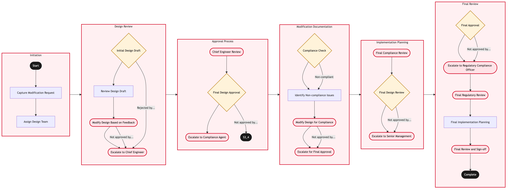

Updated 2026-08-21
Engineering Order and Modification Design
Process flow
Click to zoom

Process steps
▼
Phase 1 — Initiation
2 steps
| Step | Activity | Role | System | Input | Output | KPI | Dec | Exc | Pain point |
|---|---|---|---|---|---|---|---|---|---|
| 1.1 | Capture Modification Request | Engineering Manager | TRAXB | Modification request details | New work order created in TRAX | Time to capture request < 2 hours | N | N | Manual input errors can delay the process. |
| 1.2 | Assign Design Team | Engineering Manager | TRAXB | Work order details | Team assigned in TRAX | Time to assign team < 1 hour | N | N | Resource allocation and availability issues. |
▼
Phase 2 — Design Review
4 steps
| Step | Activity | Role | System | Input | Output | KPI | Dec | Exc | Pain point |
|---|---|---|---|---|---|---|---|---|---|
| 2.1 | Initial Design Draft | Designer | TRAXB | Work order and requirements | Design draft document | Draft completed within 3 days | Y | N | Complex designs may require additional time. |
| 2.2 | Review Design Draft | Engineering Manager | TRAXB | Design draft document | Feedback on design draft | Review completed within 1 day | N | N | Miscommunication between designers and managers. |
| 2.3 | Modify Design Based on Feedback | Designer | TRAXB | Design draft document and feedback | Revised design document | Time to revise < 2 days | N | Y | Feedback loop can be lengthy. |
| 2.4 | Escalate to Chief Engineer | Engineering Manager | TRAXB | Design draft document and feedback | Chief Engineer's review request sent | Time to escalate < 1 hour | N | Y | High-level approval delays. |
▼
Phase 3 — Approval Process
3 steps
| Step | Activity | Role | System | Input | Output | KPI | Dec | Exc | Pain point |
|---|---|---|---|---|---|---|---|---|---|
| 3.1 | Chief Engineer Review | Chief Engineer | TRAXB | Revised design document | Chief Engineer's feedback | Review completed within 2 days | N | Y | Technical scrutiny can be rigorous. |
| 3.2 | Final Design Approval | Engineering Manager | TRAXB | Chief Engineer's feedback | Approved design document in TRAX | Time to approve < 1 day | Y | N | Approval bottlenecks due to backlog. |
| 3.3 | Escalate to Compliance Agent | Engineering Manager | TRAXB | Approved design document | Compliance check request sent | Time to escalate < 1 hour | N | Y | Compliance checks can be time-consuming. |
▼
Phase 4 — Modification Documentation
4 steps
| Step | Activity | Role | System | Input | Output | KPI | Dec | Exc | Pain point |
|---|---|---|---|---|---|---|---|---|---|
| 4.1 | Compliance Check | Cargo Compliance Agent | TRAX eMobilityB | Approved design document | Compliance check report | Check completed within 3 days | Y | N | Complex compliance requirements can delay the process. |
| 4.2 | Identify Non-compliance Issues | Cargo Compliance Agent | TRAX eMobilityB | Compliance check report | List of non-compliance issues | Time to identify issues < 1 day | N | N | Detailed review can be time-consuming. |
| 4.3 | Modify Design for Compliance | Designer | TRAXB | Approved design document and non-compliance issues | Revised design document | Time to revise < 2 days | N | Y | Feedback loop can be lengthy. |
| 4.4 | Escalate for Final Approval | Engineering Manager | TRAXB | Revised design document | Final approval request sent | Time to escalate < 1 hour | N | Y | Final approval can be delayed. |
▼
Phase 5 — Implementation Planning
3 steps
| Step | Activity | Role | System | Input | Output | KPI | Dec | Exc | Pain point |
|---|---|---|---|---|---|---|---|---|---|
| 5.1 | Final Compliance Review | Cargo Compliance Agent | TRAX eMobilityB | Revised design document | Compliance check report | Review completed within 2 days | N | Y | Technical scrutiny can be rigorous. |
| 5.2 | Final Design Review | Engineering Manager | TRAXB | Revised design document and compliance check report | Final review feedback | Review completed within 1 day | Y | N | Feedback loop can be lengthy. |
| 5.3 | Escalate to Senior Management | Engineering Manager | TRAXB | Revised design document and final review feedback | Senior management approval request sent | Time to escalate < 1 hour | N | Y | Senior management approval can be delayed. |
▼
Phase 6 — Final Review
5 steps
| Step | Activity | Role | System | Input | Output | KPI | Dec | Exc | Pain point |
|---|---|---|---|---|---|---|---|---|---|
| 6.1 | Final Approval | Senior Management | TRAXB | Revised design document and final review feedback | Approved design document in TRAX | Time to approve < 1 day | Y | N | Approval bottlenecks due to backlog. |
| 6.2 | Escalate to Regulatory Compliance Officer | Engineering Manager | TRAXB | Revised design document and final review feedback | Regulatory compliance officer's approval request sent | Time to escalate < 1 hour | N | Y | Regulatory compliance can be time-consuming. |
| 6.3 | Final Regulatory Review | Regulatory Compliance Officer | Transport Canada CAWISC | Revised design document and final review feedback | Regulatory compliance check report | Review completed within 2 days | N | Y | Technical scrutiny can be rigorous. |
| 6.4 | Final Implementation Planning | Engineering Manager | TRAXB | Approved design document and regulatory compliance check report | Implementation plan in TRAX | Time to complete < 1 day | N | N | Detailed planning can be time-consuming. |
| 6.5 | Final Review and Sign-off | Engineering Manager | TRAXB | Implementation plan | Signed-off implementation plan in TRAX | Time to complete < 1 day | N | Y | Coordination issues can delay the process. |
Swim lanes
Engineering Manager1.1 1.2 2.2 2.4 3.2 3.3 4.4 5.2 5.3 6.2 6.4 6.5
Designer2.1 2.3 4.3
Chief Engineer3.1
Cargo Compliance Agent4.1 4.2 5.1
Senior Management6.1
Regulatory Compliance Officer6.3
Systems touched
TRAXBTRAX eMobilityBTransport Canada CAWISC
Key performance indicators
- Design draft completion within 3 days
- Feedback review within 1 day
- Revised design document completion within 2 days
- Chief Engineer's review completion within 2 days
- Final approval within 1 day
Risks and control points
- Complex designs may exceed time estimates
- High-level approvals can be delayed
- Technical scrutiny by compliance agents can be rigorous
- Senior management approval delays
- Regulatory compliance checks can be lengthy
Air Canada Process Wiki — process and systems reference compiled from public sources
for IT Application Management and User Support pre-sales discovery.
Built 2026-08-21. Every system carries an evidence tier: tier C is an industry pattern and tier U is an open
question, and neither should be asserted as fact about Air Canada without confirmation in discovery.
Not affiliated with or endorsed by Air Canada. Air Canada, Aeroplan and Altitude are trademarks of Air Canada.